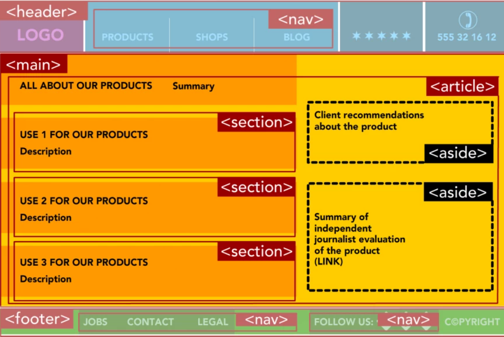

The UI of the online shop
You implement the UI for a online shop using HTML only. Implement the exercise in the
index.html in the
same directory as this instructions.html file. It should be valid HTML5.
CSS and CSS rules are not a part of this exercise, but CSS rules are implemented in later exercise in this
round.
When creating the UI you will need to use semantic tags, for more information about semantic tags see
https://www.semrush.com/blog/semantic-html5-guide/
.
Semantic tags - a brief overview
-
header – The <header> element defines content that should be considered the
introductory
information of a page or section.
-
nav – Main navigation menu links would all be placed in a <nav> tag. But sub
navigation
menus
elsewhere on the page could also get one.
-
main – The body of a page should go in the <main> tag – not sidebars and main
navigation.
There should
be only one per page.
-
article – The <article> element defines self-contained content that could stand
independently of
the page or site it’s on. For example, a blog post.
-
section – Using <section> is a way of grouping together nearby content of a similar
theme. A
section tag differs to an article tag because it isn’t necessarily self-contained.
-
aside – An <aside> element defines content that’s less important. It’s often used for
sidebars –
areas that hold complementary, not vital information.
-
footer – You would use <footer> at the base of a page or section. It might include
contact
information
and some site navigation.
See Fig.1. for visualization of the layout that can be achieved with these elements.

Fig.1. Online shop UI
- header is the first container, containing a nested nav element.
- Next, comes main element, with an article element inside it. Inside the article,
there are three section and two aside elements.
- footer is the bottommost element under main. footer contains two nav
elements.
The container-containee relationships in your index.html file should be as described above.
If there are more than one containee, using IDs is necessary. IDs are unique, and they make it
easier to point to a specific element e.g. when positioning them. IDs should be as described in the table:
| Parent element |
Element requiring ID |
IDs of the elements |
| article |
section |
sec1, sec2, and sec3 |
| article |
aside |
aside1, aside2 |
| footer |
nav |
nav1, nav2 |
Notice: the actual positioning of the elements is achieved with CSS grids, which is implemented in the next
exercise.